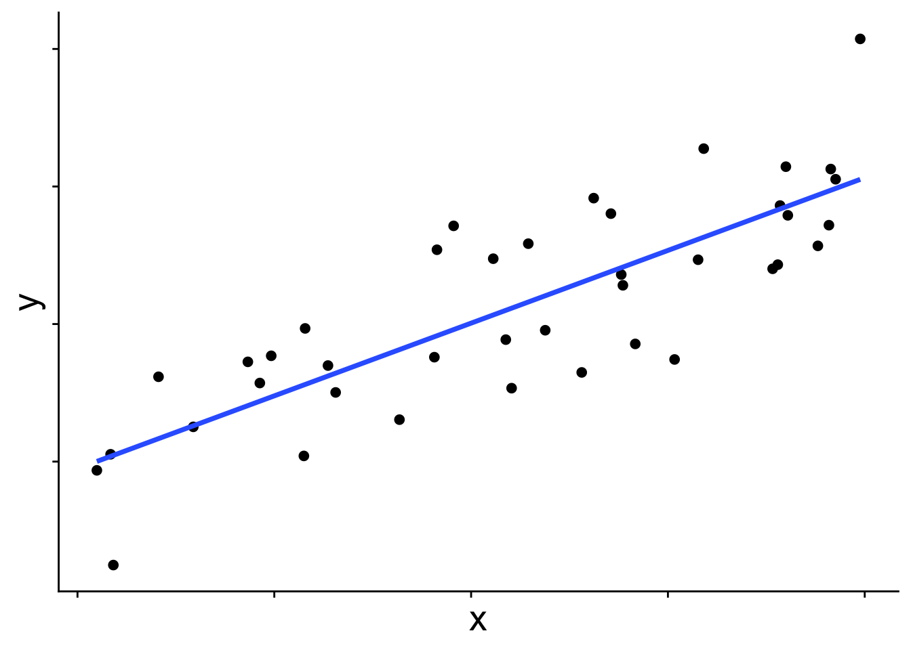
19 The Binomial Generalized Linear Model
So far we have worked with linear models that assume a normal distribution. Whether or not we consider random effects, the model is built off the idea that the mean of a normal distribution changes across values of the explanatory variables and from that normal distribution we get our response data. In the simple linear model case that approach looks like this:
In graphical form
And in equation form
\[ \begin{aligned} \bar{y} &= b_0 + b_1 x \\ y_i &\sim \mathcal{N}(\bar{y},~\sigma) \end{aligned} \]
\(\bar{y}\) is the blue line in the figure, and each data point is presumed to come from a normal distribution with mean \(\bar{y}\). But you may wonder, does the distribution always have to be a normal? The answer is no! Many other distributions can be used for these kinds of linear models. When we use a distribution other than normal, we call the model a generalized linear model (GLM). To introduce how GLMs work we’ll start with the binomial GLM, also known as logistic regression.
19.1 Introducing the binomial generalized linear model
When the response variable takes on only the values 0 and 1—for example, whether a species is present or absent—a normal distribution is simply not the right tool. This becomes obvious when we try to fit a standard linear model to presence/absence data:
# first simulate some data with rbinom
set.seed(123)
x <- runif(40)
y <- rbinom(length(x), size = 1, prob = plogis(10 * (x - 0.5)))
dat <- data.frame(x, y)
# plot it with a straight line prediction
ggplot(dat, aes(x, y)) +
geom_point(size = 3) +
geom_smooth(method = "lm", se = FALSE) +
theme_cowplot() +
theme(axis.text.x = element_blank(),
axis.title = element_text(size = 20))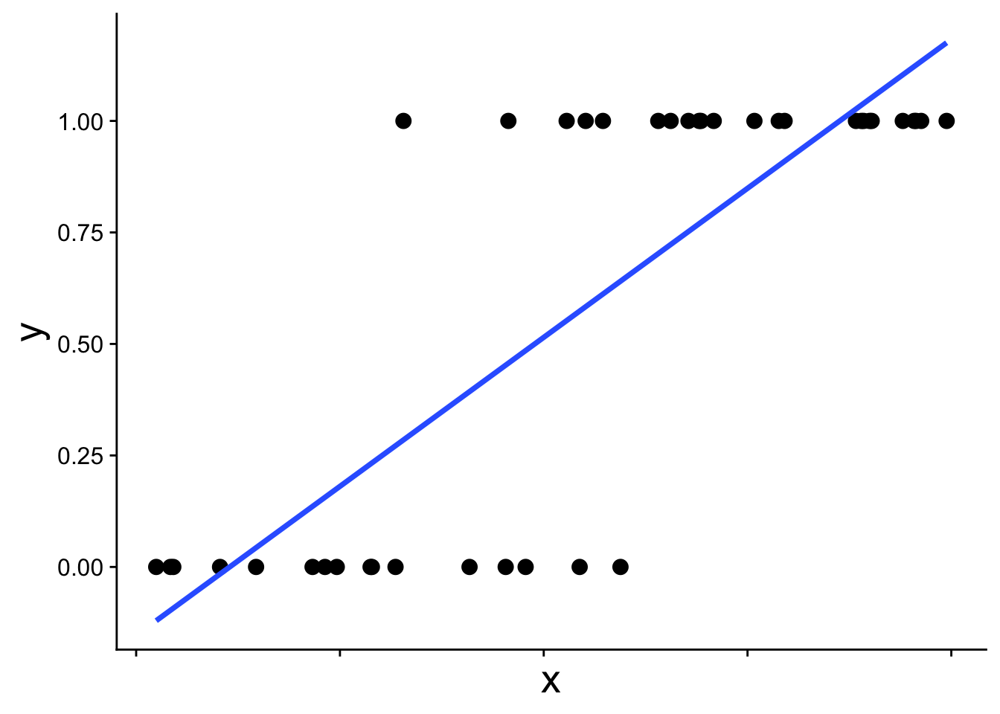
The straight blue line extends beyond 0 and 1, which is not allowed for probabilities. The appropriate model instead recognizes the structure of the data: each observation comes from a binomial distribution with some probability \(p\), and that probability \(p\) changes with \(x\). This type of model is called a binomial generalized linear model (binomial GLM), sometimes also called logistic regression. A binomial GLM gives us a prediction that looks like this:
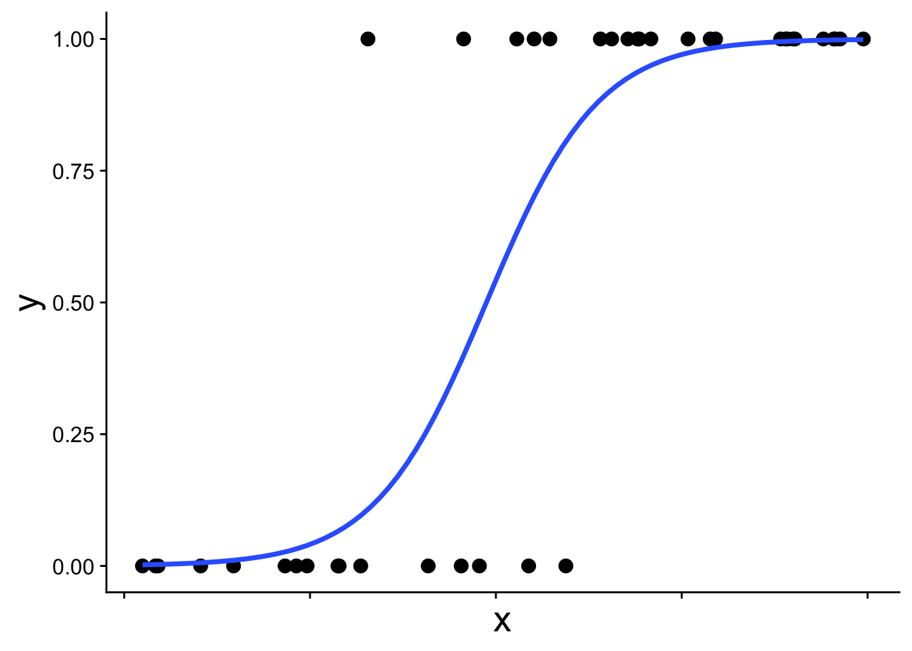
19.1.1 The link function
We’ve been here before (in our first intro to likelihood) when simulating presence/absence data across a gradient using the expit function
\[ p = \frac{1}{1 + e^{-(b_0 + b_1 x)}} \] This is the equation that produces the S-shaped curve we saw in the previous figure
ggplot(data.frame(x = 0:1, p = 0:1), aes(x, p)) +
geom_function(fun = function(x) plogis(10 * (x - 0.5)),
linewidth = 2) +
theme_cowplot() +
theme(axis.text.x = element_blank(),
axis.title = element_text(size = 30))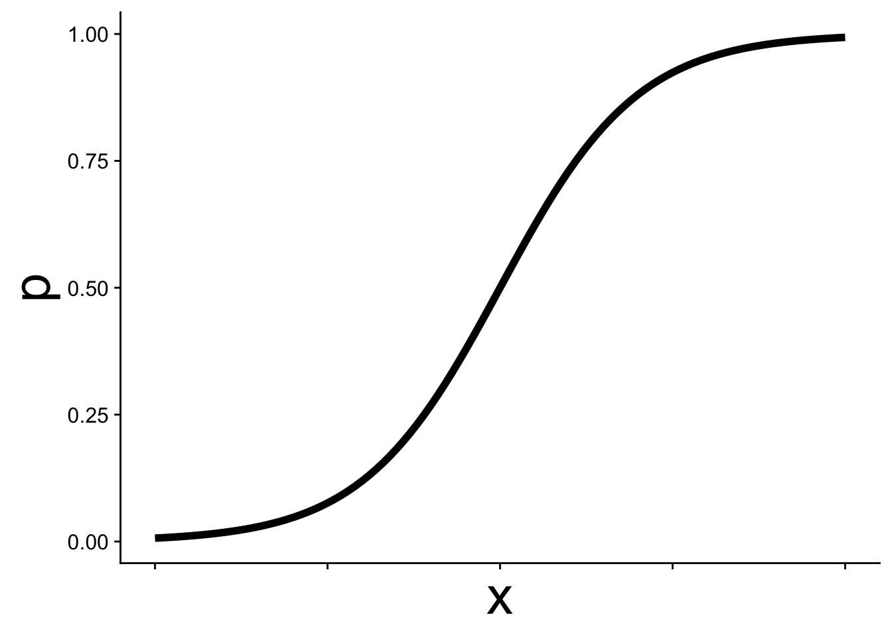
In GLM this kind of equation is called the link function and it allows p to change as a function of \(x\) while still staying within the necessary bounds of [0, 1]. Thus we can use p in a binomial distribution:
\[ y \sim \text{Binom}(p,~N = 1) \]
Often, but not always, in binomial GLM we work with data where \(N = 1\) is the natural choice—situations where there can only be one of two outcomes: yes/no, present/absent, etc.
It is often easier to think about the link function from the other direction. The logit function is the inverse of the expit function:
\[ logit(p) = \log\left(\frac{p}{1-p}\right) = b_0 + b_1 x \]
Expressed this way, we simply have a straight line. This is the sense in which a GLM is still a linear model, the link function allows us to work with linear equations while still working within the contraints of the probability distribution of our choosing—binomial in this case with \(p\) constrained to be between [0, 1].
19.1.2 Fitting a binomial GLM in R
To fit a binomial GLM in R we, conveniently, use the glm function. The syntax is nearly identical to lm with one new argument: family.
mod <- glm(y ~ x, data = dat, family = binomial)The argument family = binomial tells glm two things:
- We are assuming the response follows a binomial distribution
- We want to use the logit link function (the default link for the binomial family, though other link functions can be specified)
19.1.3 Interpreting the coefficients
We can inspect the coefficients just as we would for a linear model:
coefficients(mod)(Intercept) x
-6.477281 13.293045 What do these parameters mean? How could the intercept be -6.48 when the data can’t be less than 0? The key is that the coefficients are on the logit scale, not the probability scale.
gplink <- ggplot(cbind(dat, logitp = predict(mod, type = "link")),
aes(x, logitp)) +
geom_line(linewidth = 2) +
ylab("logit(p)") +
theme_cowplot() +
theme(axis.title = element_text(size = 20))
gplink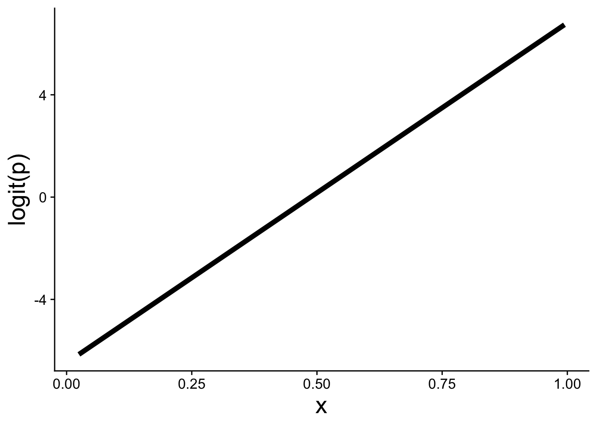
A positive slope \(b_1 > 0\) means that as \(x\) increases, \(\text{logit}(p)\) increases, which in turn means \(p\) increases. The expit function then curves that linear relationship into the S-shape on the probability scale.
19.2 Visualizing the model and data
Using ggplot we can add a binomial GLM prediction to our visualizations using geom_smooth with method = "glm":
ggplot(dat, aes(x, y)) +
geom_point() +
geom_smooth(method = "glm",
method.args = list(family = binomial))We also have to specify family = binomial.
Extra care is often needed when plotting these kinds of data because points tend to overlap significantly across \(y = 0\) and \(y = 1\). One approach is to use a small amount of vertical jitter. We use width = 0 to avoid horizontal jitter, which would distort the explanatory variable:
ggplot(dat, aes(x, y)) +
geom_jitter(width = 0, height = 0.05)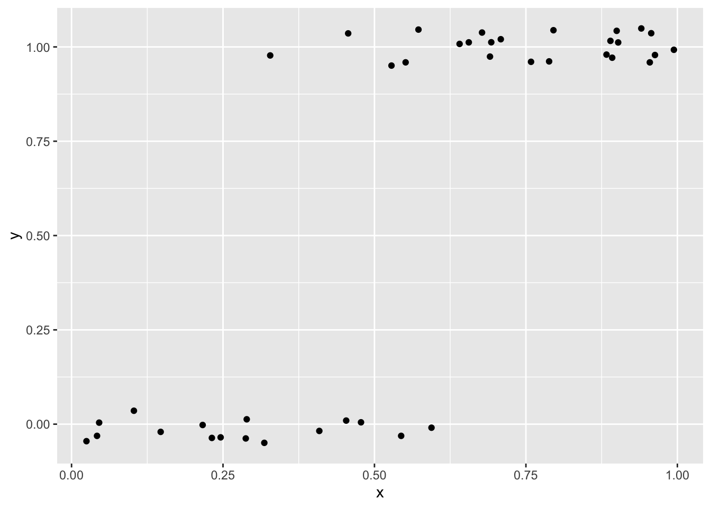
Another option is using transparency (alpha) to help show overlapping points
ggplot(dat, aes(x, y)) +
geom_point(alpha = 0.5)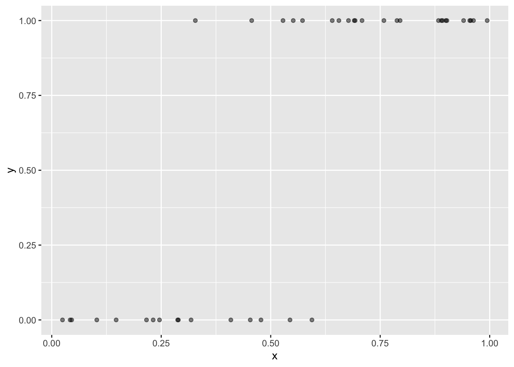
Yet another option, and perhaps the prettiest, is to use color to show the local density of points. The ggpointdensity package makes this possible:
library(ggpointdensity)
ggplot(dat, aes(x, y)) +
geom_pointdensity(method = "kde2d") +
scale_color_viridis_c()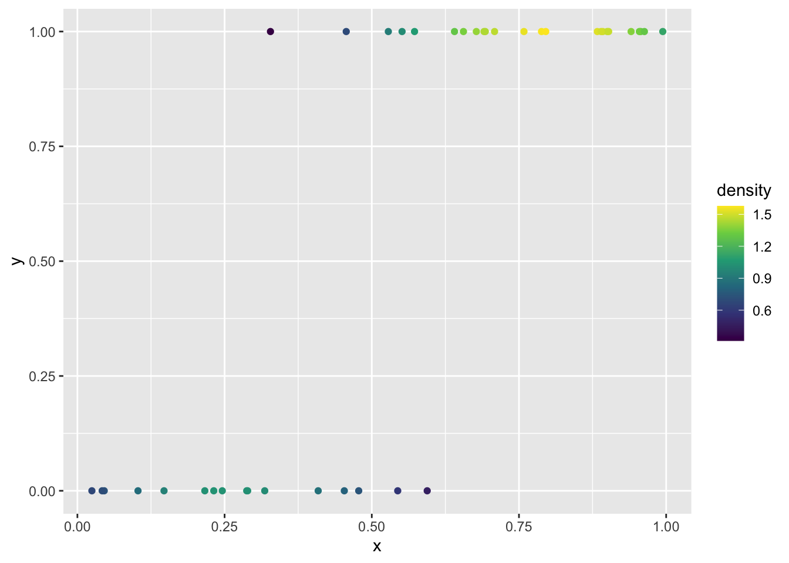
To plot the model on the link function scale (the straight-line logit scale), there are two equivalent approaches. The first uses the estimated coefficients directly in a custom function we can pass to geom_function:
# store the coefficients
bb <- coefficients(mod)
bb
# make a function for logit(p)
my_logit <- function(x, intercept, slope) {
intercept + slope * x
}
ggplot(dat, aes(x)) +
geom_function(fun = my_logit,
args = list(intercept = bb[1], slope = bb[2])) +
ylab("logit(p)")The second uses predict with type = "link" to extract the fitted \(logit(p)\) values directly from the model object:
# "hat" usually indicates these are predicted values
logitp_hat <- predict(mod, type = "link")
# add the predicted values as a column to the data and plot
ggplot(mutate(dat, logitp = logitp_hat), aes(x, logitp)) +
geom_line(linewidth = 2) +
ylab("logit(p)")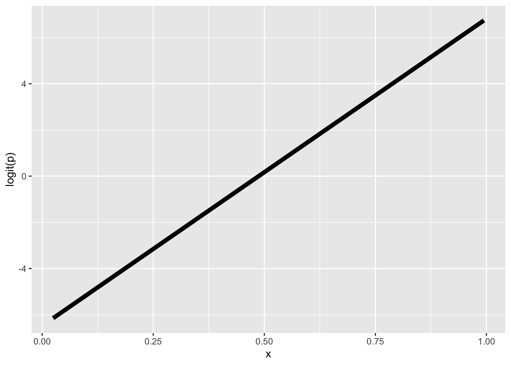
Both approaches produce the same straight line on the logit scale.
19.3 Use cases for the binomial GLM
We use the binomial GLM when the response variable is binary or a proportion. Using the tree data, let’s look at some real examples.
19.3.1 Presence/absence
One of the most common uses of binomial GLM in ecology is to model presence/absence of a species across sites. As an example we can look at the nuisance invasive species strawberry guava (Psidium cattleianum) and ask: how does the probability of finding strawberry guava change with elevation?
I have done some data prep behind the scenes to give us a data.frame called stra_gua that looks like
head(stra_gua) PlotID elev_m any_gua num_gua num_tre
1 1 395.1798 1 6 75
2 2 129.6578 1 6 80
3 3 129.6578 0 0 37
4 4 129.6578 1 50 100
5 5 129.6578 1 49 99
6 6 129.6578 1 1 64These data are aggregated at the survey plot level, so each row is one plot and the any_gua column is 1 if at least a single strawberry guava was found in the plot, and 0 if none where.
We can use that to build a binomial GLM
mod_gua <- glm(any_gua ~ elev_m, data = stra_gua, family = binomial)
coefficients(mod_gua)(Intercept) elev_m
0.35003142 -0.00234146 The effect of elevation (the slope of \(logit(p)\) across elevation) is negative, meaning the higher you go, the less likely to find strawberry guava.
We can see that in the visualization of the data along with the model
ggplot(stra_gua, aes(elev_m, any_gua)) +
geom_pointdensity(size = 3,
position = position_jitter(width = 0, height = 0.05)) +
scale_color_viridis_c() +
geom_smooth(method = "glm", color = "black",
method.args = list(family = binomial)) +
xlab("Elevation (m)") +
ylab("Presence = 1") Warning: Removed 13 rows containing missing values or values outside the scale range
(`stat_pointdensity()`).`geom_smooth()` using formula = 'y ~ x'Warning: Removed 13 rows containing non-finite outside the scale range
(`stat_smooth()`).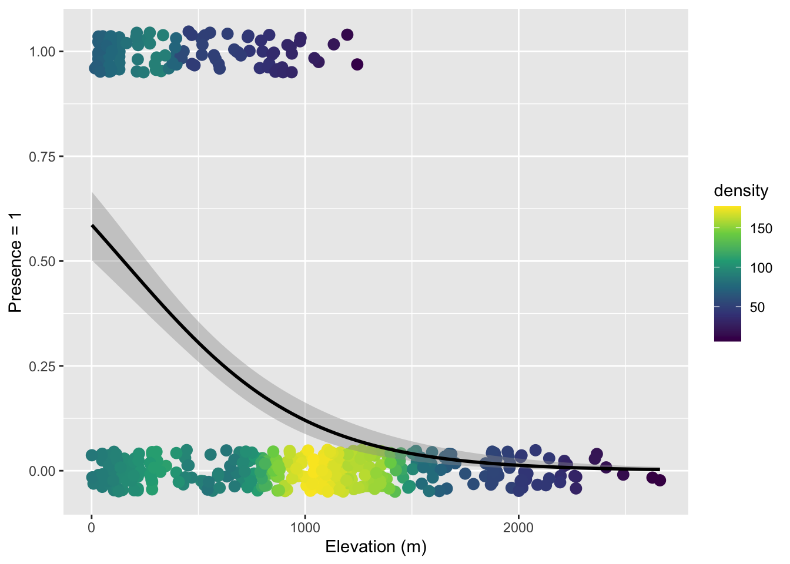
Note that here we used both color-coding of the point density and a small about of verticle jitter because there is just so much data.
19.3.2 Binary properties of sampling units
We can ask a similar question where we treat aggregate non-native status as a property of a survey plot. That is, if a plot has at least one non-native tree, we label the plot as having non-natives. There are only two options: a plot has non-natives or it does not.
Again, I have done some data prep behind the scenes to make tree_plot which is, again, aggregated at the plot level so each row is one plot
head(tree_plot) PlotID elev_m any_non num_non num_tre
1 1 395.1798 1 9 75
2 2 129.6578 1 7 80
3 3 129.6578 1 1 37
4 4 129.6578 1 56 100
5 5 129.6578 1 49 99
6 6 129.6578 1 23 64The column any_non is 1 if there was at least one non-native tree and 0 if all trees were native (ignore the other columns for now). We can again build a binomial GLM
mod_non <- glm(any_non ~ elev_m, data = tree_plot, family = binomial)
coefficients(mod_non) (Intercept) elev_m
1.974957526 -0.002905418 The elevation effect is again negative, meaning the probability of a plot having non-native trees decreases with elevation. Here is the visualization:
ggplot(tree_plot, aes(elev_m, any_non)) +
geom_pointdensity(size = 3,
position = position_jitter(width = 0, height = 0.05)) +
scale_color_viridis_c() +
geom_smooth(method = "glm", color = "black",
method.args = list(family = binomial)) +
xlab("Elevation (m)") +
ylab("Presence of non-native") Warning: Removed 13 rows containing missing values or values outside the scale range
(`stat_pointdensity()`).`geom_smooth()` using formula = 'y ~ x'Warning: Removed 13 rows containing non-finite outside the scale range
(`stat_smooth()`).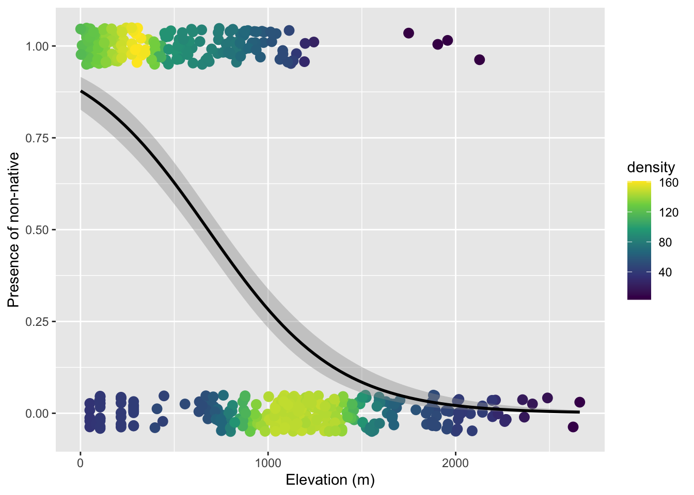
19.3.3 Number of successes versus failures
One might ask: we collapsed all the tree-level data to a single 0 or 1 per plot—are we throwing away information? Yes. Should we therefore model and visualize these data at the level of individual trees? Let’s try.
The data.frame called tree_stem (again one I made behind the scenes) is resolved at the level of individual tree (one per row)
head(tree_stem) PlotID elev_m non_nat
1 2 129.6578 0
2 2 129.6578 0
3 2 129.6578 0
4 2 129.6578 0
5 2 129.6578 0
6 2 129.6578 0Let’s just jump to the visualization because the point we’re trying to make is that this is not the right approach:
ggplot(tree_stem, aes(elev_m, non_nat)) +
geom_pointdensity(size = 4,
position = position_jitter(width = 0, height = 0.05)) +
scale_color_viridis_c() +
geom_smooth(method = "glm", color = "black",
method.args = list(family = binomial)) +
xlab("Elevation (m)") +
ylab("Presence of non-native") geom_pointdensity() using method='kde2d' due to large number of points (>20k). You may override this by setting method='neighbors'.Warning: Removed 14656 rows containing missing values or values outside the scale range
(`stat_pointdensity()`).`geom_smooth()` using formula = 'y ~ x'Warning: Removed 14656 rows containing non-finite outside the scale range
(`stat_smooth()`).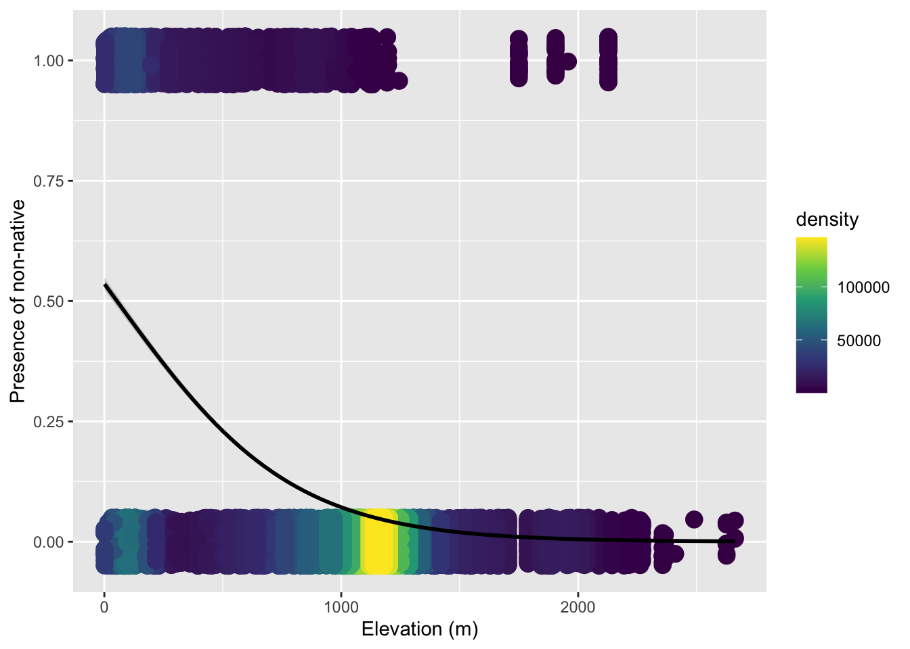
The issue is we cannot simply treat each individual tree as an independent observation, because trees within the same plot are not independent of each other. They share the same climate, soil, disturbance history, ecological interactions, etc. etc.. Using individual trees naively would introduce pseudo-replication.
But we actually don’t need a mixed effects model here. We can leverage the fact that a binomial distribution works for number of sucesses in any size trial, \(N\) does not have to equal 1. Within each plot we have a genuine binomial sample: \(N\) trees total, of which some number are non-native. We can model the number of “successes” (non-native trees) out of \(N\) trials directly. This is why tree_plot had columns for num_non (number of “successes”) and num_tre (total number of trees = \(N\)).
The glm function accepts this by supplying a two-column matrix as the response: the first column is the count of “successes,” the second is the count of “failures.”
# cbind(successes, failures) as response
mod_prop <- glm(cbind(num_non, num_tre - num_non) ~ elev_m,
data = tree_plot,
family = binomial)To visualize this model we plot the observed proportion of non-native trees at each survey plot. Because geom_smooth needs to know the underlying counts to fit the weighted binomial, we also pass success and failure as extra aesthetics:
ggplot(tree_plot, aes(elev_m, num_non / num_tre,
success = num_non,
failure = num_tre - num_non)) +
geom_pointdensity() +
scale_color_viridis_c() +
geom_smooth(method = "glm", color = "black",
formula = cbind(success, failure) ~ x,
method.args = list(family = binomial)) +
xlab("Elevation (m)") +
ylab("Proportion non-native")Now we can rest assured we have utilized all the information in the data while not introducing pseudo replicates.